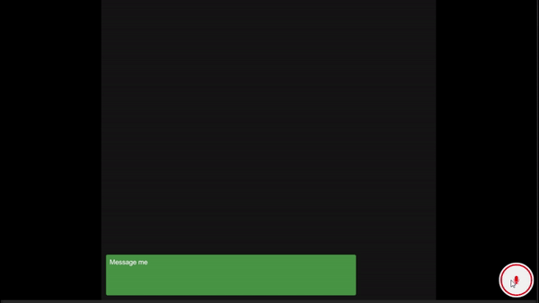

Talk With LLM
On-device speech recognition and LLM inference in Unity

Overview
This project combines speech recognition using the Whisper model and Sentis with LLM inference using LLMUnity and the Google Gemma 2 2B model — all running on-device in Unity.
It's a great starting template for implementing on-device AI in any Unity project. Please check the project link for more information.